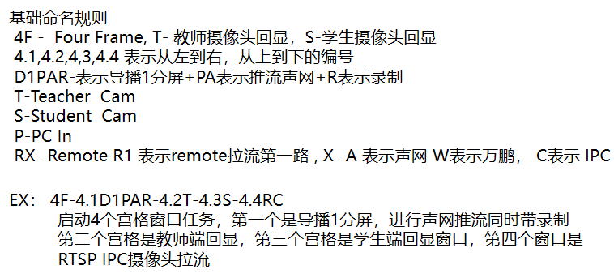

4.Scenario
- 简述：
DemoMCS目录下都存放一个 SXEX 目录,该目录由存放一些MCS 模板文件目录和若干功能脚本。
为了体现MA API灵活性，脚本设计为动作脚本，即一个动作对应一个脚本。几乎所有动作脚本都需要在一个基础脚本运行后 才能执行。一个故事是由许多个动作脚本组成的，通过一个
Act_Story.py脚本触发故事。该文档会对脚本下发的 MCS 进行一些说明，讲述各个Spec之间的关系。
Scenario脚本存放路径： /home/user/Metis-MCS/03_Scenario_Driven_Tests/
基础脚本命名规范：
大部分脚本会以一个基础脚本启动任务，即调用
/mediatask/create_update接口 下发一个MCS，启动基础任务,命名规范可以参考下图。